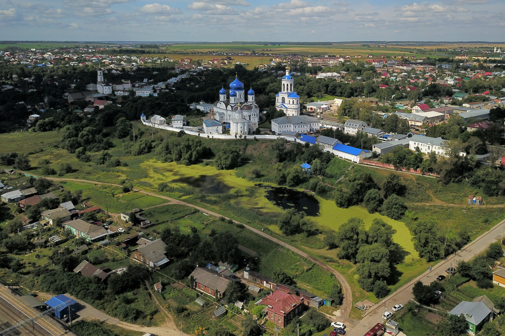
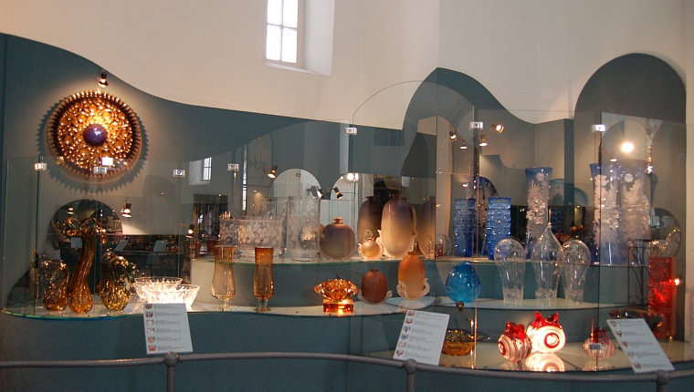

Успенский собор
Год основания: 1158
Успенский собор — один из самых известных памятников древнерусской архитектуры. Построен в XII веке при князе Андрее Боголюбском. Здесь хранились важнейшие реликвии и иконы.
Подробнее
Золотые ворота
Год основания: 1164
Золотые ворота — символ города Владимира и уникальный памятник оборонительной архитектуры. Они были построены как главный въезд в город с западной стороны.

Боголюбово
Год основания: 1165
Село Боголюбово известно благодаря храму Покрова на Нерли. Построен в 1165 году и считается архитектурным шедевром. Это место связано с князем Андреем Боголюбским.

Музей хрусталя
Год основания: 1974
Музей хрусталя расположен в бывшей церкви и представляет уникальную коллекцию изделий из стекла и хрусталя. Работы мастеров из Гусь-Хрустального.